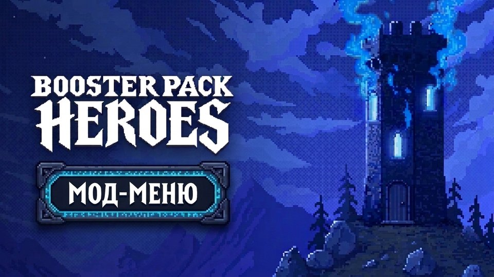

Ранний доступ · скоро откроется

Ski-E-O! Ski Resort Tycoon
v1.0 · Win, DeckСтарт с бюджетом 5 000 000 $, заморозка счёта, репутация курорта, бесплатные снегопушки и быстрая камера.
Переводы, таблицы .CT и сохранения бесплатны сразу · новые мод-меню открываются всем через 48 часов.
Старт с бюджетом 5 000 000 $, заморозка счёта, репутация курорта, бесплатные снегопушки и быстрая камера.

Сохранение на 4 уровень, прокачка всех 8 навыков, бесконечная выносливость, дальний захват x3 и автосортировка.

10 000 000 $ на счету со старта, золотые слитки, очки навыков, все инструменты, магнит купюр и ускорение работы.

Скорость косилки x2.5, широкая дека 4.4 м, бесконечное топливо, покос участка 18x18 м, деньги и смена погоды.

Лагерь 10 уровня со старта, запас монет, кирпичей и глины, быстрый бег, лёгкая переноска блоков и защита от жары.

Стартовый запас всех валют, неуязвимая башня, урон курсора, 100% фольгированные и гигантские карты в бустерах.

Стена на 500 000 HP, быстрый призыв отрядов, бесплатная стройка, множители золота и душ и таланты за 1 душу.
Система Playrooms95, 177 реплик скрепки Балли, письма, телетекст и 4 шрифта игры плюс выносливость и фонарик.

631 предмет каталога, 15 скриптов, форум и реплики вИИрона со шрифтом Underdog и умным поиском е/ё.

Сюжетные диалоги, предметы, рецепты, задания и подписи мини-карты (7 036 строк) под патч 2.1.7.

3 009 строк кампании, снаряжения и кооператива с пиксельным шрифтом 8x8, тактическим экраном и запасом бюджета.

Кампания на 50 уровней, древо навыков и все 30 достижений на 5 кириллических шрифтах игры плюс опции золота и славы.
Такой игры в каталоге пока нет.
Предложите её в очередь разбора или закажите сборку под свою игру на Boosty.
Готовые сборки открываются всем; первые 48 часов новинки и свежие патчи выходят на Boosty.